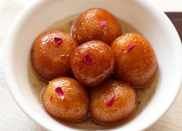

Gulab Jamun Recipe with Koya(Indian Dessert)

INGREDIENTS (1 cup = 250 ml)
For Jamuns:
- 1 cup khoya (mawa or dried evaporated milk solids) OR 200 grams khoya
- ¾ cup grated paneer OR 100 grams of paneer (cottage cheese)
- 3 tablespoon maida (all purpose flour)
- 2 tablespoon fine sooji (rava or semolina)
- 4 green cardamoms (choti elaichi) - powdered in a mortar-pestle
- 1 tablespoon milk or add as required
- ¼ teaspoon baking powder
- oil for deep frying the gulab jamuns
For Sugar syrup:
- 250 grams sugar OR about 1.75 cup sugar
- 1 cup water
- 1 tablespoon rose water
- 1 tablespoon milk (optional) - read notes
HOW TO MAKE RECIPE
preparing jamuns:
- Take khoya/mava/evaporated milk in a bowl. mash it very well. there should be no lumps. you can also grate and then mash the khoya.
- Then add grated paneer, rava/sooji, all purpose flour/maida, baking powder and cardamom powder to the mashed khoya. there should be no lumps in both the mava and paneer.
- As if they are there, then you will find the texture of the gulab jamuns not so good. the bits and pieces of mava or paneer will give a bite in the mouth, when you have the gulab jamuns. they won't be smooth.
- Mix well. add milk and gather together to form a dough with milk. don't knead.
- Just gently mix. if you are unable to form balls or if the mixture appears dry, then add a few teaspoons of milk. cover the dough and keep aside for 30 mins.
- Make small balls from the dough. cover the balls and keep aside.
preparing sugar syrup:
- Dissolve sugar in water. heat the sugar solution till it become sticky. you just need to switch off the fire before the syrup reaches a one thread consistency.
- Add rose water and stir. keep the sugar solution aside. on cooling if the sugar syrup crystallizes, then just add 2 to 3 tbsp water and warm the syrup again. it will again return to a liquid state.
frying jamuns:
- Meanwhile, while the sugar syrup is cooking, heat oil till its medium hot. lower the flame and wait for a minute. then gently place the gulab jamuns in the oil.
- Once they start to have tiny golden spots, keep on rotating them in the oil, so that the gulab jamuns are evenly browned.
- Remove the gulab jamuns and then drain them on kitchen paper towels to remove excess oil.
- Then place the hot gulab jamuns in the sugar syrup. continue frying the gulab jamuns this way in batches.
- When all the jamuns are placed in the sugar syrup, then keep the whole pan with the sugar syrup and gulab jamuns, on a low flame for a few minutes till the jamuns become soft.
- Heating helps the gulab jamuns to absorb the syrup and become soft. the jamuns increase a bit in size. don't over cook as then the jamuns break.
- Use a large pan, so that the gulab jamuns are not overcrowded and you can easily stir them gently while they are simmering.
- Serve gulab jamuns warm or at room temperature. you can also chill the gulab jamuns and serve them cold. garnish the gulab jamuns with rose petals or almond slivers.